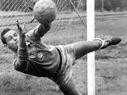
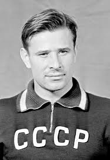

подробно о яшине


Лев Ива́нович Я́шин (22 октября 1929, Москва — 20 марта 1990,
там же) — советский футболист, вратарь. Олимпийский чемпион
1956 года и чемпион Европы 1960 года, пятикратный чемпион СССР,
трёхкратный обладатель Кубка СССР. Заслуженный мастер спорт
а СССР (1957), Герой Социалистического Труда (1990)[4], кавалер
двух орденов Ленина (1960, 1990). Единственный вратарь в истории,
получивший «Золотой мяч»[5].
В течение всей жизни оставался приверженцем своего единственного клуба —
московского «Динамо»[6]. С 1944 года начал регулярно играть в футбол в команде
завода, позже был приглашён в «Динамо», где в 1950 году дебютировал в чемпионате
СССР. Не убедив своей игрой тренеров, почти три года после дебюта не выступал в
основном составе. В этот период, помимо футбольных тренировок и матчей в дубле,
играл за хоккейное «Динамо», где стал обладателем Кубка СССР по хоккею с шайбой.
В 1953 году получил новый шанс закрепиться в составе, которым успешно воспользовался,
и вплоть до завершения карьеры считался главным вратарём команды.
С 1954 года выступал в составе сборной СССР, став единственным советским
участником четырёх чемпионатов мира[7]. Его выступление на первом для
СССР чемпионате мира по футболу произвело большое впечатление
на мировую публику[8].